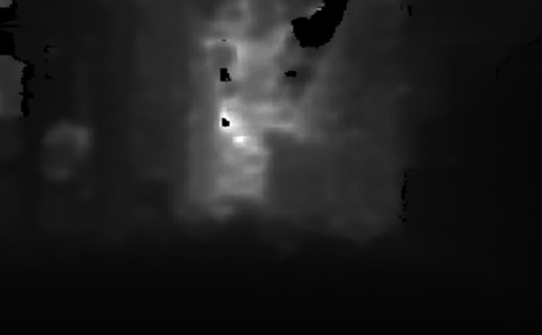

See it run
Not a render — our Go2 prototype.

- Real robot, real sensors — the on-board brain perceives the scene and chooses each move in plain-language steps.
- No map, no GPS lock, no joystick — just a camera and cheap depth.
- Firmware reflexes keep it safe between brain decisions.
